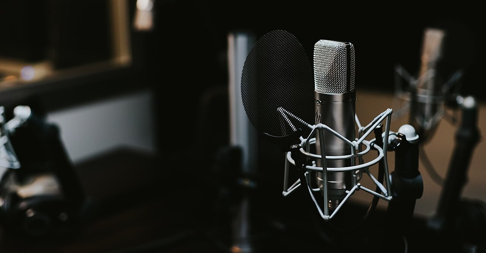
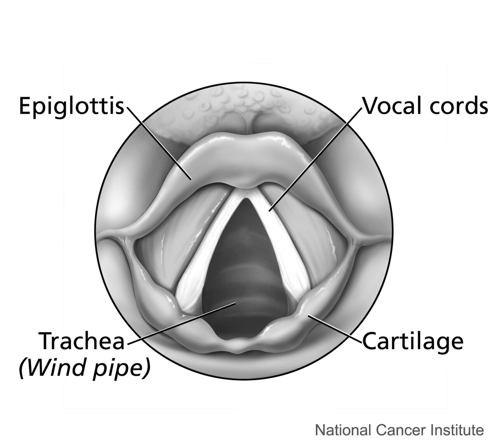
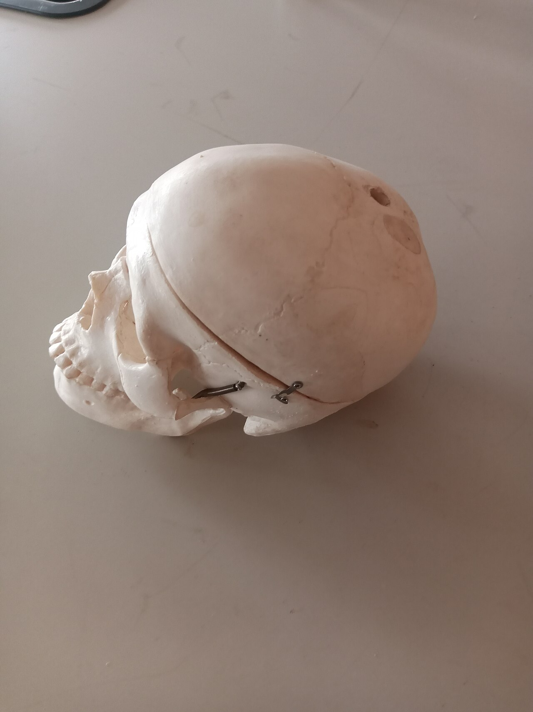
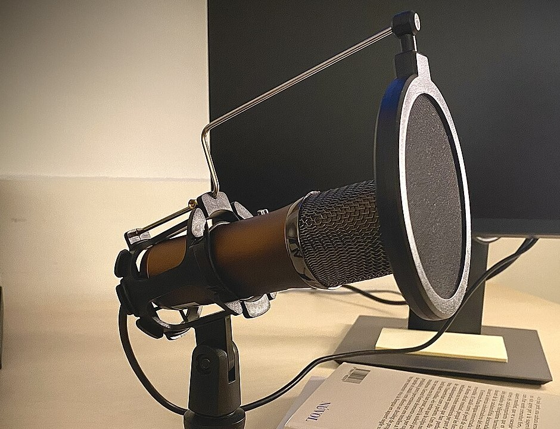
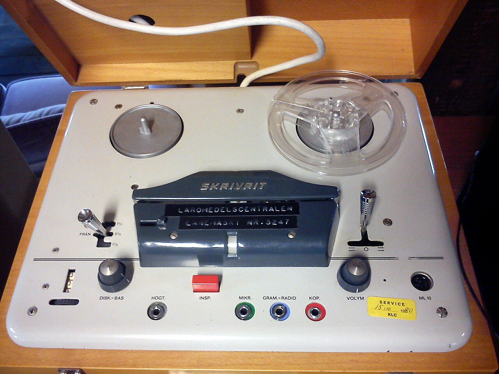
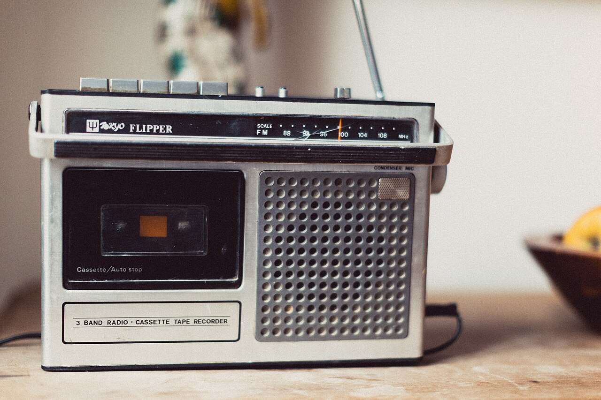
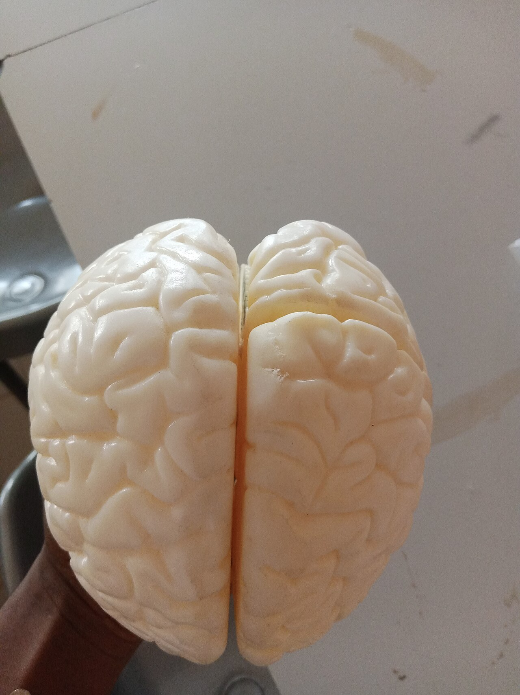

人間・心理 Human & Mind録音した 自分の声は、 なぜ変に 聞こえる？ 録音で聞く自分の声に、「こんな声なの？」と驚いたことはありませんか。声が耳に届く2つの道と聞こえ方の違いを模式図で、家でできる実験を手順の図で見ていきます。でも、知らずに聞いたら、あなたはその声をどう評価するでしょう？
2026.11.02 UP 約5分で読める 文：SOMOSOMO編集部
写真：Studio microphone／Jonathan Velasquez（2016年、CC0）
アメリカ・ペンシルベニア州の2つの大学の研究者が行った実験です。80人の男女が、いろいろな人の声の録音を次々に聞いていきました。どの声も、1から10までの数を読み上げているだけ。参加者は、それぞれの声がどれくらい魅力的かを点数で答えます。発表は2013年です。
スマホで撮った動画で自分の声を聞いて、「え、こんな声？」とぞっとした経験は、多くの人にあるでしょう。生まれてからいちばん長く聞いてきた声のはずなのに、録音すると別人のように聞こえる。なぜでしょう。実はさきほどの実験にも、ある仕掛け がありました。
In a word
録音には、頭の骨を伝わる音 が入らないから。
01
Two Paths
自分の声は、 2つの道を通って 耳に届く
声のもとは、のどの奥にある声帯 です。左右1対のひだのような形をしていて、肺から出た息が通るときに、すばやくふるえます。このふるえが空気をゆらし、口から音になって出ていきます。

V字形の白い2本のすじが、声帯 のどの奥を上からのぞいた図です。右上の「Vocal cords」が声帯、すき間の奥の暗い穴が気管（Trachea）。声を出すと、2本のすじが寄り合ってふるえます。図：Larynx (top view) ／Alan Hoofring、アメリカ国立がん研究所（2003年、パブリックドメイン）
ほかの人の声は、空気を伝わって耳の穴に入り、鼓膜をゆらして聞こえます。この道を気導（きどう） 、つまり空気の道といいます。自分の声も、口から出たあと空気を回って、自分の耳に入ってきます。
ところが、自分の声にはもう1つの道があります。声帯のふるえは、のどや顔の骨から頭の骨全体に広がり、耳の奥で音を感じとる器官（内耳）を直接ゆらします。これを骨導（こつどう） 、つまり骨の道といいます。
Fig.01 自分の声が 耳に届く 2つの道 （模式図）
声帯がふるえる
気導（空気の道）
骨導（骨の道）
口から出た声が
空気を伝わる
耳の穴を通って
鼓膜をゆらす
のどのふるえが
頭の骨に伝わる
骨から直接
耳の奥をゆらす
耳の奥で合わさる ＝ ふだん聞く自分の声
マイクには空気の道だけ ＝ 録音の声
見どころは、赤い骨の道。ふだんの声には2つの道の音が合わさっていますが、点線のマイクへの道には、骨の道がつながっていません。
自分の声を聞くとき、私たちはこの2つを同時に聞いています。一方、ほかの人の耳には、空気の道の音しか届きません。あなたの声を、あなたと同じように聞いている人は、ほかに1人もいないのです。

声は、この骨の中にも響いている 人の頭の骨の模型です（写真はイメージです）。声帯のふるえは、こうした骨の中を伝わって、耳の奥まで届きます。骨の道の音は、話している本人にしか聞こえません。写真：The Human Skull 02 ／Edeh Sophia（2023年、CC0）
02
The Missing Bass
録音には、 骨の道の声が 入っていない
骨は、高い音より低い音が伝わりやすいといわれます。骨の道が加わるふだんの声は、そのぶん響きが豊かに聞こえています。マイクがひろうのは空気の道の音だけ。録音では骨の道の響きがそっくり抜け落ちるのです。
Fig.02 ふだんの声と 録音の声、 音の高さごとの違い （模式図）
空気の道（気導）
骨の道（骨導）
縦＝音の大きさ
大きい
小さい
ふだん
録音
ふだん
録音
ふだん
録音
低い音
中くらいの音
高い音
見どころは、赤い部分がそっくり消えた「録音」の棒。中くらいの音では、骨の道が空気の道を上回ることもあります。骨の道の加わり方は人や発音で違い、棒の高さは測った値ではない模式です。
ただ、骨の道が加える音の高さは一通りではありません。2010年、スウェーデンの研究チームが10種類の発音（母音や子音）で2つの道をくらべました。測ってみると、多くの発音で骨の道が空気の道を上回ったのは、1〜2kHz（1秒に1,000〜2,000回ふるえる音）あたりの中くらいの高さでした。
人による違いも大きいようです。2018年、日本の研究チームは、録音の低い音や高い音を強めたり弱めたりして、「いちばん自分の声らしいもの」を学生に選ばせました。選ばれた加工は人によってばらばらで、だれにでも合う「自分の声に戻す加工」は見つかりませんでした。

マイクがひろうのは、空気の道の音だけ ポッドキャスト（ネットで配信する音声番組）用のマイクです（写真はイメージです）。どんなに性能のよいマイクでも、話す人の頭の骨に響く音はとらえられません。写真：Micròfon de pòdcast i llibres en català ／Xavier Dengra（2023年、CC0）
耳をふさいで、 骨の道を聞いてみよう 骨の道の音は、自分の耳で確かめられます。両手の指で耳の穴を軽くふさいで、「あー」と声を出してみてください。声が急に大きく、こもって低く聞こえるはずです。この現象は閉塞（へいそく）効果 と呼ばれます。
骨のふるえは、耳の穴の壁もゆらしています。ふだんはその音が外へ逃げていきますが、穴をふさぐと中にこもり、特に低い音が強まります。外から入る空気の道の音は弱まるので、骨の道の音がくっきりと浮かび上がるのです。
Fig.03 家でできる、 骨の道の聞きくらべ
AS USUAL ふつうに「あー」と言う いつもの声の高さと大きさを覚えておく EARS CLOSED 耳をふさいで「あー」と言う 両手の指先で、耳の穴をそっとふさぐ。強く押しこまない RECORDED 録音して「あー」を聞く 同じ高さの「あー」をスマホで録音し、再生して聞く COMPARE 3つの声をくらべる 耳をふさいだ声はこもって響き、録音の声はいちばん響きの少ない声に聞こえるはず
見どころは、2番目と3番目。耳をふさぐと骨の道が強まり、録音では骨の道がなくなります。同じ「あー」が、道の違いだけで3通りに聞こえます。
この奥の穴を、指でそっとふさぐ 人の耳を間近から写した写真です（写真はイメージです）。実験では、耳のくぼみの奥にある穴を、指先で軽くふさぎます。それだけで、骨の道の音がはっきり聞こえます。写真：Closeup of a human ear ／אנדר-ויק（2009年、パブリックドメイン）
03
Voice Confrontation
あの気まずさは、 音の違いだけでは 説明できない？
とはいえ、音の違いだけで、あのぞっとする気持ちまで説明できるのでしょうか。この問いに取り組んだのが、アメリカの研究者フィリップ・ホルツマンとクライド・ルーシーです。
1966年、2人は録音した自分の声と向き合う体験を「声の対決（ボイス・コンフロンテーション）」と呼んだとされます。録音を通して、自分の声と真正面から向き合うことを指す言葉です。
2人が注目したのは、言葉の中身ではない、声の調子です。不安や迷い、悲しさ、いら立ちは、自分では気づかないうちに声ににじみます。録音を聞くと、人に見せているつもりのない自分の一面を、外から突きつけられる。違和感の一部はそこから来る、と2人は考えました。


自分の声を、機械で聞き返す 左は、1960年代にスウェーデンの学校で使われたオープンリール式の録音機（テープを巻いたリールがむき出しの形）。右は、カセットテープで録音できるラジオです。こうした機械が身近になって、だれもが自分の声を聞き返せるようになりました。写真：左 Skrivrit reel-to-reel tape recorder ／Petey21（2012年、CC0）、右 Tokyo Flipper 3 Band Radio · Cassette Tape Recorder ／fancycrave1（2015年、CC0）
翌1967年には、2つの言葉を話す人たちを調べた研究も発表されています。紹介によると、録音を聞いたときの落ち着かなさは、あとから覚えた言葉より、最初に覚えた言葉で話した録音のほうが強かったといいます。
音の違いだけなら、どちらの言葉でも同じはずです。生まれ育った言葉のほうに、それだけ自分らしさがにじむということでしょう。ただし、どれも半世紀以上前の研究で、いまの方法で確かめ直されたものではありません。
04
The Quiet Brain
話している間、 脳は自分の声を 少しだけ聞き流す
脳のしくみも関わっていそうです。2002年、カリフォルニア大学サンフランシスコ校のチームが、脳の磁気の変化を測る装置（MEG）で、音を聞きとる脳の部分（聴覚野）の反応を調べました。
くらべたのは、自分で話しているときと、その声の録音を同じ大きさで聞かされたときです。聴覚野の反応は、話しているときのほうが弱く なっていました。脳は、自分が出す声を前もって予測し、その分だけ反応をおさえていると考えられています。

話すとき、脳は答えを先に用意する 脳の模型を上から見たところです（写真はイメージです）。聴覚野は、この写真では見えにくい左右の側面、耳の上あたりにあります。写真：The Human Brain Model 01 ／Edeh Sophia（2023年、CC0）
これは、自分でくすぐってもくすぐったくない のとよく似た、予測のしくみだと考えられています。脳は自分の動きの結果を先回りして知り、予測どおりの感覚を弱めています。声の場合、予測の材料は、のどや口を動かす命令だとみられます。
話すときには予測があり、録音を聞くときにはありません。録音の声がどこかよそよそしく感じられることに、この違いが関わっている可能性もあります。ただし、そこまではまだ確かめられていません。
05
By the Numbers
数字で見る、自分の声
80人 声の魅力を点数で答えた、2013年の実験の参加者。冒頭のこの実験には、参加者に知らせていない仕掛けがあったHughes・Harrison、2013年
1〜2kHz 多くの発音で、骨の道の音が空気の道の音を上回った高さ（1秒に1,000〜2,000回ふるえる音）。骨の道が加えるのは、いちばん低い音だけではないReinfeldt ほか、2010年
8/10人 加工しない録音より、加工した録音のほうを「自分の声に近い」と選んだ学生の数。ただし、選んだ加工は人によって違ったKimura・Yotsumoto、2018年
Here's the Fun Part
ここが面白い！知らずに聞いた 自分の声には、 高い点をつけていた
冒頭の、1から10まで数える声の実験には仕掛けがありました。聞かせた録音の中に、参加者本人の声が3つずつ、こっそり混ぜてあったのです。アメリカのオルブライト大学のスーザン・ヒューズと、ペンシルベニア州立大学のマリッサ・ハリソンの研究です。
参加者の多くは、自分の声だと気づいていなかったと研究者はみています。それなのに、自分の声には、ほかの参加者がつけたより高い点をつけていました。自分が他人の声につけた点とくらべても、自分の声のほうが高かったのです。
研究チームは、自分に関わるものを無意識に高く見る心のくせ（論文では「声の暗黙の自己中心性」）の表れだと結論づけ、何度も接したものを好きになる心のくせ（単純接触効果）の可能性も挙げています。知らずに聞けば、私たちはむしろ、その声を気に入っていたのです。
次に録音した自分の声を聞いて落ちこみそうになったら、思い出してください。周りの人がいつも聞いているのは、その録音に近い声です。そして、知らずに聞けば、あなた自身もけっこう気に入る声なのです。